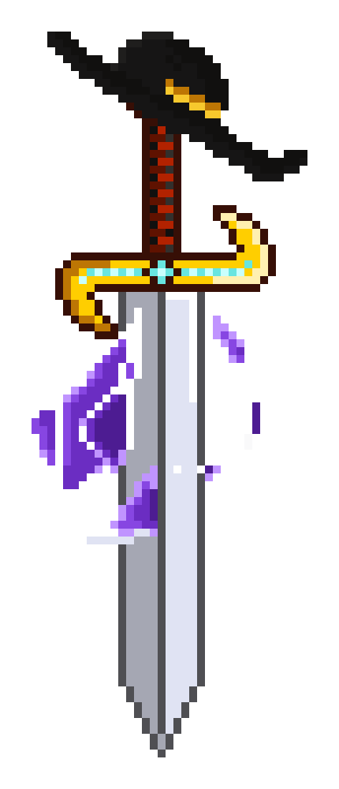

Sobre o jogo
Até onde a ambição pode te levar?
Em Refractions of Greed, você controla um personagem que encontra um artefato misterioso e se vê envolvido em acontecimentos que testam sua ambição. Conforme avança, novos caminhos se abrem, inimigos mais poderosos surgem e a linha entre poder e autodestruição começa a se apagar. No final, o maior desafio será enfrentar a si mesmo e decidir se ainda existe espaço para a redenção. Enfrentar o mal lá fora é fácil; difícil é encarar o que está dentro de você.
Projeto
Refractions of Greed
Refractions of Greed é um jogo 2D Metroidvania desenvolvido como TCC por alunos da ETEC Martinho Di Ciero utilizando a Godot Engine com C#. Inspirado em títulos como Hollow Knight, The Legend of Zelda e Dark Souls, o jogo explora como a ganância pode consumir uma pessoa, misturando desafio e narrativa em uma jornada de redenção.
Galeria
Conheça os Principais Personagens
Gameplay & Mecânicas
Clipes do Jogo
Controles simples, com foco no essencial: desviar, atacar e explorar.
Inimigos que não abandonam seus alvos.
Ameaças sempre á espreita.